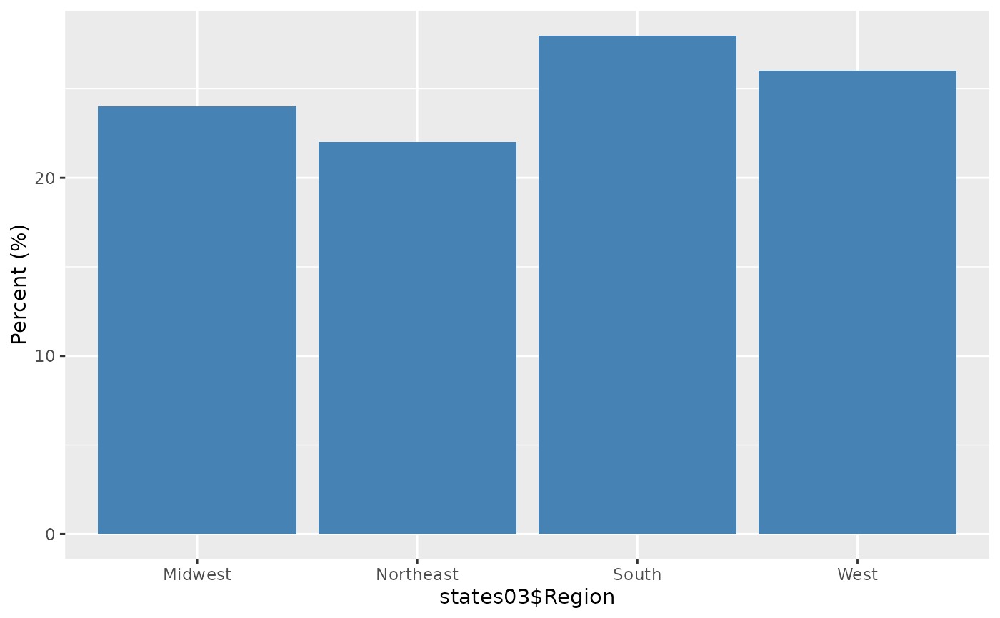

Grouped bar chart
Source:R/groupedBar.R, R/groupedBar.default.R, R/groupedBar.formula.R
groupedBar.RdCreate a bar chart of a single categorical variable or a grouped bar chart of two categorical variables.
Usage
groupedBar(resp, ...)
# Default S3 method
groupedBar(
resp,
condvar = NULL,
percent = TRUE,
print = TRUE,
cond.name = deparse(substitute(condvar)),
resp.name = deparse(substitute(resp)),
...
)
# S3 method for class 'formula'
groupedBar(formula, data = parent.frame(), subset, ...)Arguments
- resp
a factor variable. If
respis numeric, it will be coerced to a factor variable.- ...
further arguments to be passed to or from methods.
- condvar
a factor variable to condition on. If
NULL, then a bar plot of just therespvariable will be created. Ifcondvaris numeric, it will be coerced to a factor variable.- percent
a logical value. Should the y-axis give percent or counts?
a logical value. If
TRUE, print out the table.- cond.name
Label for variable
condvar.- resp.name
Label for variable
resp.- formula
a formula of the form
x ~ condvar. Ifxorcondvaris (are) not a factor variable, then it (they) will be coerced into one. Formula can also be~ xfor a single factor variable.- data
a data frame that contains the variables in the formula.
- subset
an optional vector specifying a subset of observations to be used.
Details
For a single factor variable, a bar plot. If two factor variables are given,
then a bar plot of x conditioned by condvar. This command
uses R's table command so missing values are automatically removed.
Examples
groupedBar(states03$Region)

#> Midwest Northeast South West Percent (%)
#> 24 22 28 26 100
if (FALSE) { # \dontrun{
groupedBar(states03$DeathPenalty, states03$Region, legend.loc = "topleft")
#Using a formula syntax:
groupedBar(~Region, data = states03)
groupedBar(DeathPenalty ~ Region, data = states03, legend.loc = "topleft")
} # }